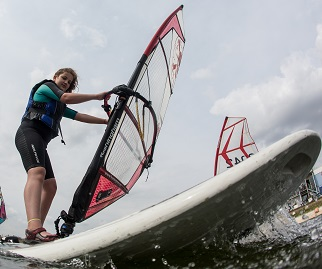
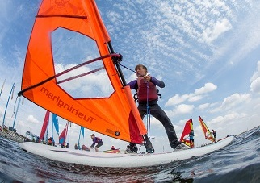
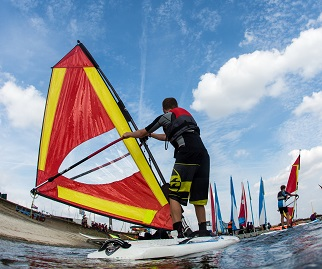
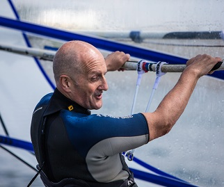
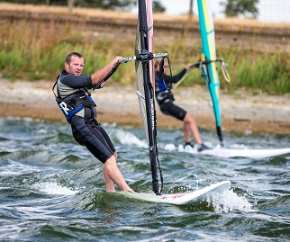
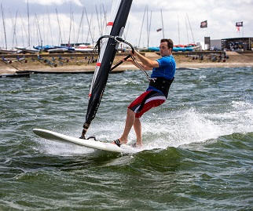
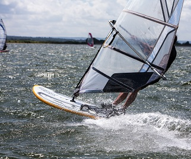
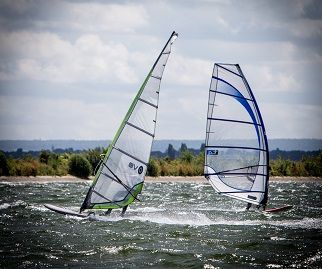
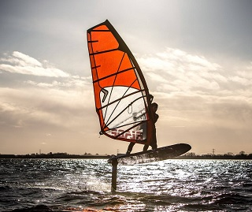

Welcome to our Windsurfing Courses at QM
We are one of the leading RYA sailing schools in the UK and have been helping people who want to learn to sail for over 50 years. Our windsurfing courses are run on a friendly yet professional basis with experienced instructors who will make your sailing lessons both fun and memorable.
QMSC provides opportunities to continue windsurfing with a range of membership options, offering Standard Membership for those with kit and Select Membership for those without and looking for a hassle free solution.
Course options and booking on the links below:

Windsurfing Taster
Our windsurfing taster sessions are for those new to sailing. Before committing to a full course, give it a try!
Prior experience needed: None!
More Information Book Now
RYA Start Windsurfing Course
The Start Windsurfing course focuses on the RYA Start Windsurfing syllabus. Assumes no prior experience. At the end of the weekend you should understand rigging, launching, sailing upwind, downwind and across the wind, steering, tacking and gybing.
Prior experience needed: None!
More Information Book Now
Start Windsurfing Group Coaching
Every other Saturday. Our group coaching takes your Start Windsurfing skills up a notch. Try a new board or brush off the cobwebs.
Prior experience needed: RYA Start Windsurfing
More Information Book Now
RYA Intermediate Non-planing Windsurfing Course
Learn the RYA Fastfwd formula to enable a smooth progression towards planing. Candidates focus on stance, control, tacking, harness work and kit setup.
Prior experience needed: RYA Start Windsurfing
More Information Book Now
Intermediate Windsurf Group Coaching
For windsurfers with intermediate non-planing looking for further coaching before taking their Intermediate planing course.
Prior experience needed: RYA Intermediate Non-Planing
More Information Book Now
RYA Intermediate Planing Windsurfing Course
Learn the RYA Fastfwd formula to enable a smooth progression towards planing. Candidates also focus on footstraps and planing control.
Prior experience needed: RYA Intermediate Non-planing
More Information Book Now
RYA Advanced Windsurfing Course
Dynamic transitions, advanced planing techniques and waterstarts. Carve gybing and other advanced skills may be taught as part of the course.
Prior experience needed: Intermediate Planing
More Information Book NowHigh Wind Performance Windsurfing Clinic
For candidates who can plane comfortably in both harness and footstraps and want to start using shorter boards or get to grips with premium kit.
Prior experience needed: RYA Intermediate Planing
More Information Book Now
Carve Gybe Clinic
A great opportunity to get on the water with one of our advanced instructors to perfect either your non-planing or planing carve gybe.
Prior experience needed: RYA Intermediate Non-Planing
More Information Book Now
RYA Windfoiling: First Flight Course
TRY WINDFOILING! Requires recent windsurfing experience and full competence planing in footstraps and harness. Shore-based introduction then first flights on the water!
Prior experience needed: Planing in both footstraps and harness
More Information Book NowPerformance Windfoiling Clinic
A great opportunity to get on the water with one of our performance foiling instructors. Work on your foiling gybes or sustained flight under instruction.
Prior experience needed: RYA First Flights or higher
More Information Book Now